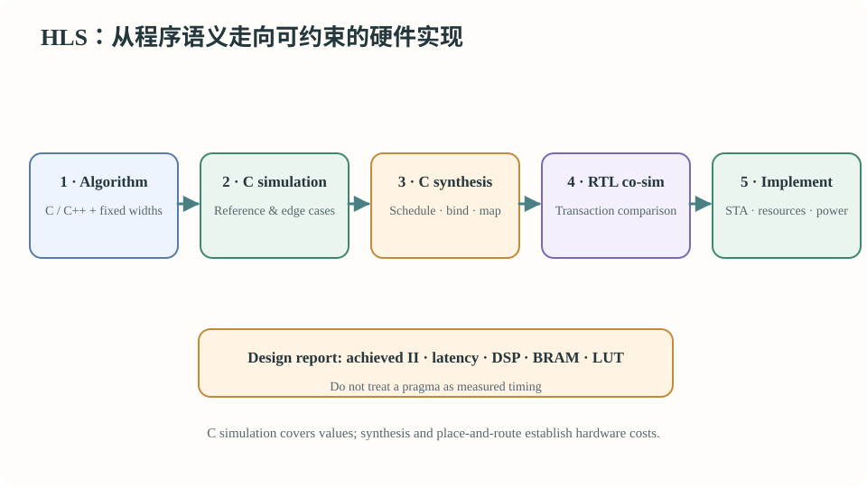
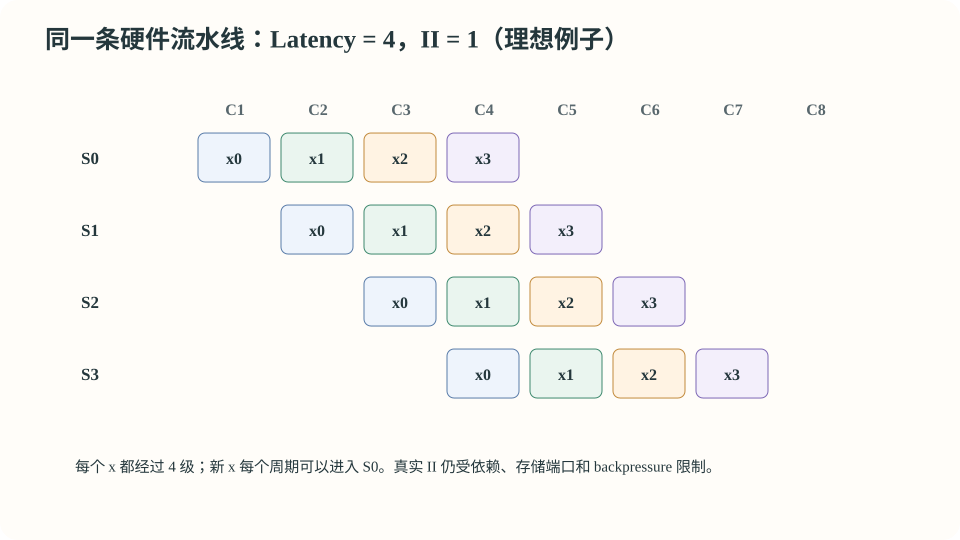
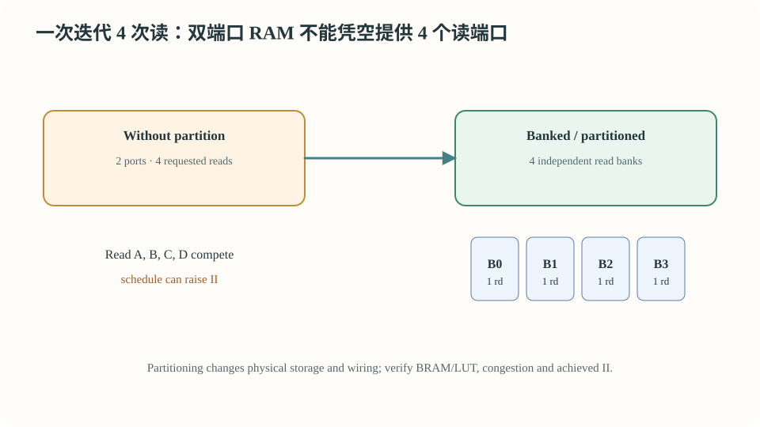
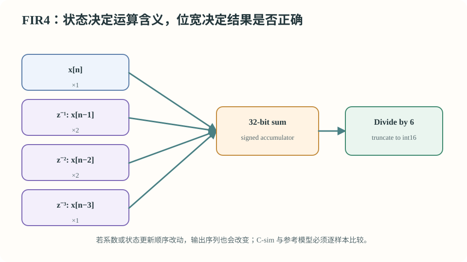

HLS 高层次综合：从 C++ 循环到流水线电路
弄清 C-Sim、调度、流水线、并行资源和 C/RTL 联合仿真的边界；用一段可运行的 FIR 算法理解为什么一行 pragma 不等于时序签核。
01 / 为什么“用 C 写硬件”仍必须理解硬件
同一段 C++ 在 CPU 上通常按指令顺序执行，在 HLS 里却成为一组具有资源、时钟、延迟与并行约束的电路。HLS（High-Level Synthesis，高层次综合）将受支持的 C/C++ 计算结构综合为 RTL，但不会自动解决协议、时钟域、存储带宽或物理实现问题。

以一个四抽头 FIR 为例：C++ 的 for 循环看起来像顺序计算，但综合器可以映射为乘法器、加法树、延迟寄存器和多路选择器。生成多少乘法器，取决于循环展开、资源共享、依赖、数据类型、时钟目标和器件资源，而不是 C++ 源码的行数。许多 STL 容器、动态内存、系统调用与不受约束的递归也不属于通用可综合 HLS 子集。
一个独立的 HLS 组件还需要定义顶层参数和接口：输入在何时有效、输出何时可见、连续事务能否重叠、复位如何作用于内部状态，以及阻塞式 stream 与 memory-mapped AXI 分别承担哪些数据交换任务。阅读 AMD UG1399（Vitis HLS User Guide）时，务必核对所用 Vitis 版本与器件支持范围。
02 / 并行语义：Latency、II 和时钟周期是三个量

Latency（延迟）描述一次事务从开始到完成所需的周期数；Initiation Interval，简称 II，描述相邻两次事务可以开始的周期间隔。例如四级流水线在无暂停、数据依赖允许的条件下，可以四拍后得到第一笔结果，此后每拍再得到一笔结果，即 latency=4、II=1。但在 HLS 中，#pragma HLS PIPELINE II=1 表示目标 II；综合器受依赖和资源限制，实际可能无法达到这个数值。AMD UG1399 · Pipeline。
若目标周期为 5 ns，等效时钟为 200 MHz，实际 II=2，则只考虑该 HLS kernel 启动能力的理想上界为 100 million samples/s，尚未扣除上游输入不连续、下游背压和总线协议空拍。目标时钟 5 ns 不是布局布线后已实现 200 MHz 的证明。
区分三种依赖：迭代间读写同一状态形成的 loop-carried dependency；共享乘法器、存储器端口形成的 resource limitation；以及下游不能持续接收而形成的 backpressure。任何一个都会改变实际吞吐。
03 / 为什么 ARRAY_PARTITION 不等于免费加速

一个包含四次独立数组读取的循环，即便完全展开了加法器，也不一定能一拍读取四个值。如果综合后只有一个两端口 RAM，则需要多个周期，或者改写数据布局。ARRAY_PARTITION 将数组拆成多 bank 或寄存器，使更多元素可以并行读取；ARRAY_RESHAPE 改变数据组织和端口宽度。但代价可能是更多 LUT、BRAM、routing 和拥塞。AMD UG1399 的 Array Accesses and Performance 给出了内存端口阻塞 II 的实例。
| 指令 | 试图改变什么 | 必须检查什么 |
|---|---|---|
| PIPELINE II=1 | 重叠相邻迭代 | 实际 II、依赖、时钟裕量 |
| UNROLL factor=4 | 展开多个迭代的运算 | 乘法器、加法器、RAM 端口 |
| ARRAY_PARTITION | 创建可独立访问的存储 bank | bank conflict、BRAM/LUT、布线 |
| DATAFLOW | 重叠不同函数/阶段的执行 | FIFO 深度、死锁、起停协议 |
对同一算法同时堆叠 PIPELINE、UNROLL、DATAFLOW 不能保证更快。流水级深度、FIFO 深度、端口数和内存访问顺序必须在设计约束下做有控制的 A/B 对比。UG1399 · Unroll、UG1399 · Dataflow。
04 / FIR4 实验：从状态方程到可以独立验证的 C++

本实验固定系数 [1,2,2,1]。令 x[n] 为当前样本、x[n−k] 为前第 k 个样本，输出定义为：
x 为 signed 16 bit，累加使用 signed 32 bit；除法遵循 C++ 对负数向零截断的规则。四个系数之和为六，因此在样本仍为 16-bit 有符号值时，输出不会超出输入有效范围。与使用浮点 float 后再转换的行为可能不同；应明确数值契约。
void fir4(std::int16_t sample, bool reset, std::int16_t *result) {
#pragma HLS PIPELINE II=1
static std::int16_t z1 = 0, z2 = 0, z3 = 0;
if (reset) {
z1 = z2 = z3 = 0;
*result = 0;
} else {
const std::int32_t sum =
static_cast(sample) +
2 * static_cast(z1) +
2 * static_cast(z2) +
static_cast(z3);
*result = static_cast<std::int16_t>(sum / 6);
z3 = z2; z2 = z1; z1 = sample;
}
} 上面展示核心思路；仓库中的可编译版本对所有乘加输入使用明确的 std::int32_t 转换，以避免隐式整型提升导致的移植性问题。static 历史的更新位置直接决定波形：如果先写 z1=sample 再计算输出，当前样本会被重复使用，FIR 时序就错了。
make -C examples/hls/fir4 test
# PASS FIR4 portable C++ reference (... samples)测试分别覆盖 impulse、reset、正负极值、连续阶跃与固定种子的随机序列，并使用独立维护历史状态的参考函数逐样本比较。这里运行的是标准 C++ 参考测试，不是 Vitis 的 RTL Co-Sim，也没有测量实际 II。
05 / 从 C-Sim 到 RTL Co-Sim：验证层级不可跳过
Vitis HLS 常见设计验证路径为：定义 top-level C/C++ 函数与 testbench，运行 C simulation，配置实际器件 part 与时钟目标，执行 C synthesis，检查调度/资源报告，再进行 C/RTL co-simulation。最终若需要 IP 交付和生产使用，应集成到 Vivado、加入完整的 XDC/CDC/接口约束并执行实现级 STA。UG1399 · Co-simulation 与 UG1387 · HLS Debug & Verification。
若要从 C/RTL co-simulation 的事务轨迹计算 initiation interval，testbench 至少需要让设计完成两笔事务；只运行一次调用无法观察相邻事务的启动间隔。AMD 在当前 UG1399 的 Co-Simulation 说明中明确列出这一条件：Running C/RTL Co-Simulation。这也再次说明，本文的 portable C++ test 不能报告 II。
在 C-Sim 中写一个正确的算法很容易遗漏总线现实条件：输入可能无效、输出可能暂停、stream FIFO 可能被写满，host 端口内存地址可能未对齐。ap_ctrl_hs 默认控制协议与 ap_ctrl_none 的数据驱动连续运算并不等同；顶层行为要按 flow 定义。UG1399 · Block-Level Control Protocols。
对每一版 pragma 组合保存目标 device part、工具版本、目标周期、achieved II、latency、DSP/BRAM/LUT 和关键时序警告。无法运行真实 HLS 时，必须写为“未验证”，不能用 C++ test pass 推断这些硬件指标。
06 / HLS 在 FPGA 系统中的最佳位置
HLS 适合计算结构清晰、可并行、数据类型受控的内核，例如 FIR、矩阵运算、预处理和流式图像滤波。对于端到端需要精确周期级控制、复杂时钟域、硬核接口 PHY、精细握手或极端资源控制的部分，手写 RTL 或厂商 IP 往往更直接。实际系统中 HLS kernel 与 RTL glue logic、AXI interconnect、DMA、DDR 控制器并存是常态。
特别注意图像处理中的行缓存：3×3 Sobel 需要前两行邻域样本，不能把独立像素阈值电路改个名字就说成 Sobel。数据窗口、边缘补零/复制策略、吞吐和存储端口都需要在规格中明确。第 28 章用真实可仿真的逐像素阈值模块作为系统内核，再单独说明 Sobel、DMA、帧缓存和显示时钟所需要的工程条件。
自测：PIPELINE II=1 写进代码后，为什么仍可能得到 II=2？
迭代之间可能存在状态反馈依赖；同一周期读写数超出 RAM 端口；也可能受到运算资源共享或时钟目标限制。II=1 是目标，不是综合结果；应检查 scheduling report 的实际 II、瓶颈及警告。
规范、工具文档与版本范围
- AMD UG1399 · Vitis High-Level Synthesis
- AMD UG1399 · Pipeline and achieved II
- AMD UG1399 · Memory ports and II
- AMD UG1399 · DATAFLOW scheduling
- AMD UG1399 · C/RTL co-simulation
- AMD UG1399 · Co-simulation transaction count and II report
- AMD UG1387 · HLS verification methodology
- Xilinx · Vitis HLS Introductory Examples